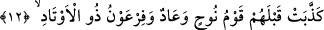
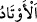

sığınmıyorlar. Allah da onlara yetiyor. Nitekim O bir kudsî hadiste şöyle buyuruyor:
“Lâ ilâhe illâllah, benim kalemdir, benim kaleme sığınan ise, benim azâbımdan emin
olur.”[2]
12. Onlardan önce Nûh kavmi, Âd kavmi, kazıklar sâhibi Firavun, peygamberleri
yalanladılar.
Ey Muhammed! Senin kavmin “Onlardan” yâni Kureyş’ten “önce Nûh kavmi”
kendilerini dokuz yüz elli sene Allah’a ve onu tevhîd etmeğe dâvet eden Nûh’u, Hz.
Hûd’un kavmi olan “Âd kavmi”, Hz. Musa devrindeki “kazıklar sâhibi Firavun,
peygamberleri yalanladılar.”
(
), yere ya da duvara dikilen ahşap şey (kazık) anlamındaki (
)’in çoğuludur.
Farsçası “mıh (
)”tır. Kazıklı demek, yerleşik sabit bir mülkü olan demektir. Çünkü
Firavun tam dört yüz sene hiçbir muhâlifi olmadan saltanat sürmüştür.
(
) kelimesi esasen, çadır iplerinin yere çakılmış kazıklara bağlanarak çadırın
sabitlenmesi işi için kullanılır. Çünkü çadır ipleri kazıklara bağlandığında, çadır
sabitleşir ve rüzgâr onu etkileyerek söküp atamaz. Sonraları ise, hükümranlığın
sabitliği, saltanatın köklülüğü ve dâimâ istediği gibi hareket edebilme anlamlarında
müsteâr olarak kullanılır olmuştur. Buradaki istiârede ise Firavun’un hükümranlığı
kinâyeli istiâre ile kazıklara bağlanmış bir yuvaya benzetilmiş ve müşebbehün bih’in
(kazıklı yuva) ayrılmaz bir unsuru olan kazıkla yere sabitlenmenin, bu hükümranlıkta
varolduğu da hayale getirilmiştir. Özellikle bu istiârenin seçilmiş olmasının sebebi,
Arap evlerinin çoğunun çadır olması ve bunların yere kazıklarla sabitlenmesidir.
Kazıklar sâhibi anlamına gelen (
) ifâdesi, “çok sayıda topluluğu olan”
anlamında da olabilir. Firavunların bu adla anılmasının sebebi, bunların ülke ve
mülklerini sağlamlaştırmalarıdır. Bunlar, tıpkı bir kazığın bina ve çadırları
sağlamlaştırması gibi, biribirlerine sımsıkı bağlıydılar. Bu mânâya göre “evtâd”,
istiâre-i tasrîhiyye olmuş olur.
Hadiste şöyle buyurulur: “Bir mü’min diğer bir mü’min için, biribirine sımsıkı
kenetlenmiş bir bina(nın tuğlaları) gibidir.”[3] Yâni mü’minler, tıpkı binaların bazı
bölümlerinin diğer bölümlerle güç kuvvet kazanması gibi, dinî ve dünyevî konularda
ancak mü’min kardeşlerinin yardımıyla güç kuvvet kazanırlar.
Firavun’un çok sayıda topluluğu bulunduğuna delil olarak İsrailoğulları hakkında
sarfetmiş olduğu şu söz yeterlidir: “Esasen bunlar, sayıları az bölük-pörçük bir
cemâattir” (eş-Şu’arâ’ 26/54). Hâlbuki İsrailoğulları, küçük ve yaşlıları saymayacak
olursak, altı yüz bin savaşçıdan az değildi.